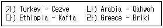
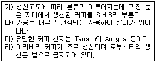
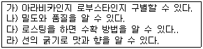
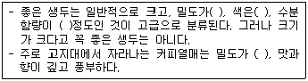
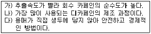
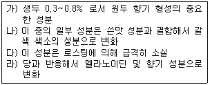
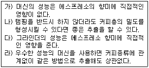

바리스타-2급 (2011-09-24 기출문제)
1과목: 커피학 개론
1. 나라에 따라 커피 어원(語源)이 다르게 전해져 왔는데, 다음 내용 중 그 연결이 옳게 짝지어진 것은 어느 것인가?

- 가), 나)
- 가), 다)
- 나), 다)
- 나), 라)
(정답률: 72%)

2. 다음의 커피체리(Coffee cherry)에 대한 설명 중 틀린 것은?
- 커피체리는 커피종자에 따라 성장속도가 다르다.
- 커피 꽃이 지고 체리가 맺혀서 수확할 때까지의 기간은 아라비카 종이 로부스타 종보다 길다.
- 커피체리는 외피, 과육, 점액질, 파치먼트, 은피, 생두의 구조로 이루어져 있다.
- 일반적으로 정상적인 체리 안에는 생두가 2개 들어 있다.
(정답률: 75%)
3. 체리 속 생두는 보통 두 개가 서로 마주보고 있다. 이 경우 서로 마주보는 방향은 평평한데 이런 형태의 생두를 무엇이라고 하는가?
- 피베리(Peaberry)
- 트라이앵글러 빈(Triangular bean)
- 홀 빈(Whole bean)
- 플랫 빈(Flat bean)
(정답률: 86%)
4. 다음 스페셜티 커피(Specialty coffee)에 대한 설명 중 가장 거리가 먼 것은?
- 이상적인 커피재배 기후 조건에서 생산된 아주 뛰어난 품질의 커피를 말한다.
- 1974년에 Erna Knutsen이 처음 언급한데서 비롯되었다고 한다.
- 미국의 전체 커피 시장은 수 십 년째 정체 상태이나 스페셜티 커피 분야는 지속적인 성장을 하고 있다.
- 커핑(Cupping) 결과 100점 만점에 70점 이상을 획득한 커피를 의미한다.
(정답률: 56%)
5. 다음 중 아라비카 종 커피가 아닌 것은?
- Brazil Santos No.2
- Kenya AA
- Indonesia WIB
- Colombia Supremo
(정답률: 67%)
6. 다음은 커피 생산국가의 하나인 코스타리카(Costa Rica)에 대한 설명이다. 올바르게 기술된 항목을 고르시오.

- 가), 나)
- 가), 라)
- 다), 라)
- 나), 라)
(정답률: 42%)
7. 다음은 아라비카 종과 로부스타 종에 관한 내용이다. 가장 거리가 먼 것은?
- 아라비카 종의 적정 경작 고도는 800m 이하이나 로부스타 종의 경우는 고도와 상관없이 경작될 수 있다.
- 아라비카 종은 로부스타 종에 비해 상대적으로 병충해에 약하다.
- 아라비카 종은 연간 약 15-24℃를 유지해야 재배될 수 있다.
- 아라비카 종은 주로 원두커피용으로 사용되며, 로부스타 종에 비해 향미가 뛰어나다.
(정답률: 76%)
8. 다음의 건조과정에 대한 설명으로 틀린 것은?
- 파치먼트나 체리를 건조시키는 장소를 파티오(Patio)라고 부른다.
- 테이블 드라이(Table dry) 방식은 통풍이 잘되고 오염을 막을 수 있으나 보다 많은 노동력을 필요로 한다.
- 테이블 드라이나 머신 드라이(Machine dry)는 파치먼트보다 체리 건조에 주로 쓰인다.
- 균일한 건조가 이루어지도록 파치먼트나 체리를 자주 뒤집어 주는 것이 중요하다.
(정답률: 62%)
9. 아라비카 원종에 가장 가까운 품종으로서 콩의 모양은 긴 편이며 좋은 향과 신맛을 가지고 있으나 그늘 경작법(Shading)이 필요하며 생산성이 낮은 품종은?
- 카투라(Caturra)
- 문도 노보(Mundo-Novo)
- 켄트(Kent)
- 티피카(Typica)
(정답률: 75%)
10. 습식법(Wet processing)을 이용한 가공과정에 대하여 틀리게 설명한 것은?
- 물이 풍부한 중남미 지역에서 아라비카 종 생산 시 주로 이용된다.
- 수확한 체리는 물을 이용하여 가벼운 체리(Floater)와 무거운 체리(Sinker)로 분리한다.
- 건식법에 비해 생산단가가 싸고 친환경적이다.
- 발효조에서 16-36시간 정도 발효시키면 pH가 3.8-4.0 범위로 내려간다.
(정답률: 70%)
11. 다음 커피나무의 생육과 수확에 대한 설명 중 옳은 것은?
- 수령이 30~40년 이상 된 나무는 베어내고 새 나무를 키워 5년 이상 성장 후 수확하는 재배 방법도 있다.
- 커피 파치먼트는 반드시 물속에서 발아하여 흙에 옮겨 심는다.
- 대개의 커피나무는 품종이 우수한 나무를 선택하여 일반 커피나무에 접붙이기하여 재배 후 수확한다.
- 수세식으로 수확한 체리는 숙성을 위해 체리 상태로 1주일 이상 상온 보관 후 발효과정을 거쳐 수세 건조한다.
(정답률: 54%)
12. 커피나무를 재배하기 위한 적절한 지역 조건에 대한 내용 중 옳은 것은?
- 연간 평균기온이 약 20℃로 큰 기온 차가 없고, 평균 강우량은 2500~3000mm 정도 되는 곳이 커피나무 재배지로 좋다.
- 아라비카종 나무는 연교차가 적은 해발 1200m 이상의 고지대에서만 재배한다.
- 커피나무는 5℃ 이하에서 재배하면 생육하지 못하므로 따뜻한 곳에서만 재배할 수 있다.
- 아라비카종 나무는 30℃ 이상에서 성장할 수 없으며, 이런 날씨가 이틀 이상 계속된다면 나무 성장에 치명적일 수 있다.
(정답률: 42%)
13. 체리에서 생두를 분리하는 방법 중 습식법(Wet processing)에만 있는 공정은?
- 건조
- 발효
- 탈곡
- 선별
(정답률: 79%)
14. 내추럴 커피(Natural coffee)와 워시드 커피(Washed coffee)의 특성에 대한 설명이 잘못된 것은?
- 내추럴 커피(Natural coffee)는 생산단가가 싸고 친환경적이다.
- 워시드 커피(Washed coffee)는 품질이 높고 균일하다.
- 내추럴 커피(Natural coffee)는 단맛과 쓴맛이 좋으며 복합적인 맛을 느낄 수 있다.
- 워시드 커피(Washed coffee)는 신맛이 좋으며 향이 좋고 바디(Body)가 강하다.
(정답률: 64%)
15. 커피열매의 습식법(Wet processing) 가공방법에 대한 공정순서가 바른 것은?
- 열매수확 → 이물질 제거 및 분리 → 건조 → 탈곡 → 분류 및 선별 → 포장 → 보관
- 열매수확 → 이물질 제거 및 분리 → 펄핑(pulping)→건조 → 탈곡→ 포장 →보관
- 열매수확 → 이물질 제거 및 분리 → 펄핑(pulping) → 발효(fermentation) → 세척 → 건조 → 탈곡 → 분류 및 선별 → 포장 → 보관
- 열매수확 → 이물질 제거 및 분리 → 발효(fermentation) → 펄핑(pulping) → 세척 → 건조 → 탈곡 → 분류 및 선별 → 포장 → 보관
(정답률: 65%)
16. SCAA 기준에 의한 결점두(Defect bean)들의 발생 원인이 잘못 연결된 것은?
- Shell - 불완전한 탈곡과정
- Black bean - 늦은 수확, 흙과의 장시간 접촉
- Withered bean - 발육 기간 동안 수분 공급 부족
- Unripe bean - 미성숙 체리의 수확
(정답률: 63%)
17. 브라질 커피 생산에 대한 다음 설명 중, 거리가 가장 먼 것은?
- 생두 등급은 생두 크기에 따라 NY2, NY3, NY4 등으로 구분된다.
- 세계 커피 생산량 1위로서 총 생산의 30% 이상에 해당되고, 기후가 좋아 다양한 방법으로 커피를 수확한다.
- 건식법으로 가공한 내추럴 커피가 대표적이며, 펄프드 내추럴 및 워시드 가공법에 의해서도 생산 가능한 나라이다.
- 주요 생산지역은 미나스제라이스(Minas Gerais), 상파울로(Sao Paulo), 이스프리투 산투(Espirito Santo), 바이아(Bahia), 파라나(Parana) 주 등이다.
(정답률: 54%)
18. 커피 생산국가와 지역, 생두 분류기준에 대한 설명이다. 잘못 연결된 것은?
- 멕시코 - 오악사카 - SHG
- 에디오피아 - 시다모 - G4
- 콜롬비아 - 메델린 - Supremo
- 인도네시아 - 세하도 - HB
(정답률: 49%)
19. 생두의 등급 분류 기준에 대한 설명으로 옳지 않은 것은?
- SCAA 분류법은 외형적 결점 사항만을 고려하여 분류한다.
- 브라질, 뉴욕 분류 기준은 결점두와 불순물을 디펙트(Defect)로 환산한 점수를 기준으로 잡는다.
- 케냐 분류법은 생두의 크기를 기준으로 한다.
- 과테말라 분류법은 생두의 재배 고도에 의해 품질을 분류한다.
(정답률: 60%)
20. 다음은 커피의 센터컷에 대한 설명이다. 맞는 것으로 묶인 것은?

- 가), 나)
- 나), 다)
- 다), 라)
- 가), 다)
(정답률: 23%)
21. 생두(Green bean)를 평가하는 방법 중 틀린 것은?
- 생두는 색깔과 크기가 균일할수록 좋은 등급으로 친다.
- 청결도(은피 제거 여부)는 가장 중요한 평가요소이다.
- 국가에 따라 300g중 결점두 수에 따라 등급이 정해지기도 한다.
- 결점두 수가 적을수록 좋은 커피로 평가된다.
(정답률: 73%)
22. 좋은 생두의 조건을 나열한 괄호 안의 옳은 내용은 무엇인가?

- 낮으며, 어두운 갈색, 12%, 낮으며
- 높으며, 밝은 청록색, 12%, 높으며
- 높으며, 어두운 갈색, 30%, 높으며
- 낮으며, 밝은 청록색, 12%, 낮으며
(정답률: 73%)
23. 다음은 디카페인 커피의 제조과정을 설명한 내용인데, 어떤 종류의 추출법을 설명한 것인가?

- 물 추출법
- 초임계 추출법
- 증류 추출법
- 용매 추출법
(정답률: 56%)
24. 우유를 높은 온도에서 가열할 때 생기는 가열취(加熱臭;Cooked flavor)의 원인이 되는 유청단백질은 무엇인가?
- 카제인
- 락토페린
- 알파-락트알부민
- 베타-락토글로불린
(정답률: 77%)
25. 우유 가열 시 가열취(Cooked flavor)는 다음 어느 것에 기인하는가?
- 유당의 산화
- 지방의 산패
- 변성단백질의 황화수소
- 단백질의 가수분해
(정답률: 37%)
26. 스팀밀크를 만드는 과정에서 우유의 단백질 외에 거품의 안정성에 중요한 역할을 하는 성분은?
- 칼슘
- 유당
- 인
- 지방
(정답률: 69%)
27. 커피전문점에서 사용되는 식재료의 저장을 위한 방법 중 부적당한 것은?
- 낮은 온도에서 저장
- 식품 내 효소 활성화
- 햇볕 노출 최소화
- 진공 포장
(정답률: 72%)
28. 다음은 커피에 함유된 폴리페놀 성분에 대한 설명이다. 틀린 것은?
- 콜레스테롤이 소화관으로 흡수되는 것을 막아 주기 때문에 혈중 콜레스테롤의 수치를 낮게 해 주는 작용도 한다.
- 중추신경을 자극하여 정신을 맑게 한다.
- 헬리코박터 균을 박멸하며 충치억제에도 효과가 있다.
- 항산화제로서 노화방지에 탁월한 효과를 나타낸다.
(정답률: 73%)
29. 커피 제조 시 바라스타가 지켜야 할 위생관리로서 적절한 것은?
- 행주와 수건은 40℃이상 온수에 중성세제 세척 후, 100℃이상 5분간 열탕 소독한다.
- 커피잔, 유리컵 및 커피 관련기물은 세제를 사용하지 않고 찬물로 깨끗이 씻어 둔다.
- 커피제조 작업대는 1일 1회 정도 세척, 청소 관리한다.
- 재료와 기구 보관고는 분기별로 1회 이상 청소 관리한다.
(정답률: 63%)
30. 스탠더드 레시피(Standard recipe)를 설정하는 목적에 대한 설명 중 틀린 것은?
- 원가계산을 위한 기초를 제공한다.
- 품질과 맛을 유지시킨다.
- 노무비를 절감할 수 있다.
- 바리스타에 대한 의존도를 높여 준다.
(정답률: 71%)
2과목: 로스팅과 향미 평가(커피 배전)
31. 커피를 로스팅할 때 발생하는 화학적 변화 중 틀린 내용은?
- 가용성 성분이 증가한다.
- 향기 성분이 탄산가스보다 더 많이 생성된다.
- 가용성 당 및 휘발성 가스가 증가한다.
- 카페인의 양에는 거의 변화가 없다.
(정답률: 49%)
32. 로스팅에 관한 아래 설명 중 옳은 것은 어느 것인가?
- 생두는 로스터 내부에서 100-180℃의 열풍으로 가열된다.
- 흡열반응은 2차 팽창 후에 일어난다.
- 생두의 탄수화물, 지방, 단백질, 유기산 등이 분해되기 시작하는 온도는 200℃이후부터 이다.
- 생두조직의 내부 온도가 160℃정도에서 수분의 증발이 끝나고, 색상이 황색으로 변하기 시작한다.
(정답률: 49%)
33. 생두를 로스팅할 때 일어나는 과정을 잘못 설명한 것은?
- 커피의 로스팅 초기에는 수분이 증발하고 신맛이 증가하나 진행이 오래될수록 쓴맛이 점차 증가한다.
- 커피 생콩을 로스팅할 때는 1차 크랙-수분의 증발에 의한, 2차 크랙-이산화탄소의 생성에 의한 팽창으로, 두번의 크랙이 일어난다.
- 커피를 로스팅할 때는 수분 증발, 무게 감소, 향미 물질 방출, 부피 감소, 밀도 감소의 현상이 일어난다.
- 로스팅은 수분의 증발, 흡열과 발열반응, 그리고 냉각의 세 단계로 분류할 수 있다.
(정답률: 58%)
34. 커피에서 느낄 수 있는 향기는, 휘발성 유기화합물들의 휘발성의 차이에 따라 아래의 네 가지로 분류할 수 있다. 다음 중 가장 먼저 느껴지는 특성은?
- Dry aroma(분쇄 커피 향)
- Aftertaste(뒷맛)
- Cup aroma(추출 커피 향)
- Nose(마시면서 느끼는 향)
(정답률: 67%)
35. 로스팅에서 생두에 열이 전달되는 방식이 아닌 것은?
- 전도
- 방사
- 대류
- 복사
(정답률: 62%)
36. 블렌딩(Blending)에 관한 내용이다 옳은 것은?
- 로스팅 후 블렌딩 시 각각 원두의 로스팅 정도를 일치시키는 것이 좋다.
- 블렌딩 시 커피의 향미 상승을 위해 아라비카 종만으로 블렌딩 한다.
- 정해진 비율에 따라 생두를 미리 혼합한 후 로스팅 하지는 않는다.
- 향미가 우선시 되므로 블렌딩 시 단가는 계산하지 않는다.
(정답률: 65%)
37. 커피를 볶을 때 기본적인 세 가지 단계에 속하지 않는 것은?
- 건조(Dry)
- 열분해(Pyrolysis)
- 냉각(Cooling)
- 포장(Packing)
(정답률: 79%)
38. 댐퍼(Damper)의 역할로 관계없는 것은?
- 흡열과 발열 반응을 조절하는 역할
- 드럼내부의 열량을 조절하는 역할
- 은피를 배출하는 역할
- 드럼내부의 공기 흐름을 조절하는 역할
(정답률: 52%)
39. 커피를 로스팅할 때 일어나는 성분의 양적 변화가 다른 하나는?
- Chlorogenic acid
- Free sugar
- Caffeine
- Trigonelline
(정답률: 61%)
40. 커피생두에 함유된 트리고넬린(Trigonelline)에 대하여 잘못 설명한 것은?
- 카페인의 약 25%의 쓴맛을 나타내는 성분이다.
- 커피 생두의 로스팅 과정에서도 거의 열분해 되지 않고 남아있다.
- 아라비카 종에서는 로부스타 종 및 리베리카 종에 비하여 비교적 많이 함유되어 있다.
- 커피뿐만 아니라 어패류 및 홍조류 등에서도 다량 함유되어 있다.
(정답률: 44%)
41. 커피가 가지고 있는 향기는 커피의 품종과 산지의 지역적 특성에 따라 나타나는 그 커피만의 고유 향기라고 할 수 있다. 다음에 예시하는 향기 성분들 가운데 휘발성이 가장 강한 향기는?
- Spicy(향신료 향)
- Nutty(고소한 향)
- Chocolaty(초콜릿 향)
- Flowery(꽃 향)
(정답률: 55%)
42. 다음은 Coffee Mouthfeel(커피 촉각)의 정도에 대한 용어이다. 이 중 고형성분의 양에 따른 정도를 표시하는 용어가 아닌 것은?
- Thick
- Heavy
- Thin
- Smooth
(정답률: 36%)
43. 다음은 커피의 어떤 성분을 설명한 것인가?

- 탄수화물의 다당류
- 단백질의 유리아미노산
- 탄수화물의 유리당
- 지질의 불포화지방산
(정답률: 59%)
44. 다음은 커피의 쓴맛에 대한 설명이다. 틀린 내용은?
- 생두를 로스팅하면 새로운 쓴맛 성분이 생성된다.
- 카페인은 커피 쓴 맛의 1/10을 넘지 않는다.
- 디카페인 커피는 쓴 맛을 나타내지 않는다.
- 카페인은 커피에 쓴 맛을 부여한다.
(정답률: 72%)
45. 커피를 약한 화력에 너무 오래 로스팅해서, 캐러멜화가 충분히 진행되지 않아 나타나는 향미의 결함은?
- Baked
- Green
- Tipped
- Woody
(정답률: 59%)
3과목: 커피 추출
46. 드립 여과(Drip filtration) 방식의 커피추출에서 커피에 수분과 열을 주어 세포를 팽창시켜 성분이 추출되기 쉬운 상태로 만들기 위한 작업은?
- 진액 추출
- 뜸들이기
- 스프링 주입
- 추출
(정답률: 69%)
47. 다음 중 커피 원두 보관에 관한 설명으로 바르지 않은 것은?
- 추출할 수 있는 분량만큼만 구입하여 보관하는 것이 바람직하다.
- 공기와의 접촉을 차단하고 적정습도를 유지하는 것이 바람직하다.
- 햇볕이 잘 드는 곳에 보관한다.
- 갈지 않은 상태에서 보관하는 것이 바람직하고, 추출할 때마다 조금씩 원두를 갈아서 사용한다.
(정답률: 75%)
48. 필터드립 추출 커피에 대한 설명으로 거리가 먼 것은?
- 커피의 추출 수율은 18-22%가 이상적이다.
- 물의 온도, 드리퍼의 종류는 추출농도와 무관하다.
- 농도계와 산도계, 추출차트를 이용하여 커피 추출을 테스트 할 수 있다.
- 원두의 양과 입자를 조절해야 원하는 농도를 추출할 수 있다.
(정답률: 73%)
49. 에스프레소 블렌딩의 목적으로 잘못된 것은?
- 카페인을 줄이기 위해서
- 비용의 절감을 위해서
- 자기만의 특징 있는 에스프레소를 만들기 위해서
- 한 종류의 커피로 ‘조화로운’맛을 만들기 어려워서
(정답률: 48%)
50. 에스프레소머신에 있어서 추출 압력 범위는 어느 정도인가?
- 0.5~1bar
- 1~1.5bar
- 2~3bar
- 8~10bar
(정답률: 55%)
51. 에스프레소 추출에서 추출되는 커피의 품질에 영향을 미치는 다음 인자 중 관계가 가장 적은 것은?
- 추출온도
- 추출압력
- 필터의 재질
- 추출시간
(정답률: 74%)
52. 일반적인 에스프레소 추출에 대한 설명이다. 올바른 것은?
- 분쇄 입자의 크기가 클수록 과다추출이 일어난다.
- 크레마의 주성분은 아교질을 포함한 지방질의 유제(Emulsion)로 이루어진다.
- 추출 시간이 길어질수록 향기롭고 고소한 맛의 에스프레소가 추출된다.
- 에스프레소 추출 과정은 침투→분리→용해의 과정을 거친다.
(정답률: 46%)
53. 에스프레소 머신의 스팀 작동 시 수증기보다 물이 많이 나오는 현상의 원인은?
- 보일러 안에 물이 80% 이상 차 있을 때
- 스팀의 노즐이 막혔을 때
- 보일러의 물이 너무 뜨거울 때
- 기압이 너무 높을 때
(정답률: 58%)
54. 그룹헤드의 개스킷(Gasket)의 교환 시기 설명 중 잘못 된 것은?
- 필터 홀더를 정면에서 90도가 되게 돌릴 때 탄력이 느껴지지 않을 때
- 필터 홀더를 정면에서 돌릴 때 90도를 넘을 때
- 커피가 잘 나오지 않을 때
- 커피 추출 시 옆으로 물이 새어 나올 때
(정답률: 46%)
55. 에스프레소 추출 시 분쇄작업에 대한 설명 중 올바른 것은?
- 입자 굵기는 원두 종류와 투입량에 따라 달라질 수 있다.
- 에스프레소에 알맞은 입자가 정해져 있으므로, 바리스타는 세팅된 그라인더를 자주 조절하면 안 된다.
- 추출현상이 빠르면 입자를 굵게 조절하고, 추출현상이 느리면 입자를 미세하게 조절한다.
- 매장의 피크타임을 고려하여, 여러 잔을 추출할 수 있는 양을 미리 분쇄해 둔다.
(정답률: 51%)
56. 다음은 커피에 관련된 용어이다. 내용이 옳지 않은 것은?
- 크레마(Crema)-에스프레소 머신으로 추출한 커피 위에 덮이는 적갈색 거품을 말한다.
- 디카페인(Decaffeine)-커피에 함유되어 있는 카페인 성분을 제거한 커피를 말한다.
- 도피오(Doppio)-더블 에스프레소를 지칭하는 이태리어이다.
- 프렌치 프레스(French press)-커피 추출 기구 중 하나로 가정용 에스프레소 머신이라고 할 수 있다.
(정답률: 61%)
57. 에스프레소 추출 시 형성되는 크레마(Crema)의 설명 중 틀린 것은?
- 높은 압력의 물이 커피 가루와 접촉하면서 원두의 불용성 오일(Insoluble oil)이 유화상태로 함께 추출되어 형성되는 것이다.
- 크레마의 색은 붉은 색 또는 진한 갈색이 섞이지 않은 깨끗한 헤이즐넛 색으로 추출된 것이 좋다.
- 에스프레소를 시음하기 전에 크레마의 시각적인 요소로 에스프레소의 품질을 판단한다.
- 영어로 크림(Cream)을 의미하며, 다른 추출방법과 달리 에스프레소는 풍성한 갈색의 거품 층이 형성된다.
(정답률: 58%)
58. 에스프레소 추출에 관한 다음의 내용 중 옳은 것만으로 짝지어진 것은?

- 가), 나)
- 가), 다)
- 다), 라)
- 나), 다)
(정답률: 47%)
59. 탬핑(Tamping)을 하는 가장 큰 요인은?
- 필터에 커피를 잘 채우기 위해
- 커피 케이크의 고른 밀도 유지를 통한 물의 균일한 통과를 위해
- 두꺼운 크레마를 얻기 위해
- 물과의 접촉 면적을 늘리기 위하여
(정답률: 74%)
60. 커피매장에서는 에스프레소 추출량을 메모리하기 위해 메모리 버튼을 기억시킨다. 기억시키는 방법 중 틀린 것은?
- 추출량을 측정하기 위해 눈금이 있는 비커를 사용한다.
- 메모리 후에는 새로운 커피를 투입하여 추출량을 다시 테스트해야 한다.
- 커피는 투입하지 않고 추출량을 비커에 맞춘다.
- 커피의 분쇄입자와 추출시간을 맞추어 추출량을 메모리 한다.
(정답률: 64%)
나라에 따라 커피 어원이 다르게 전해졌는데, 이는 커피가 처음 생산되었던 지역이나 문화적 배경 등에 따라 다르기 때문입니다.
- "나)"의 경우, 아라비아 커피의 어원은 이스라엘의 아라비아 지방에서 비롯되었다고 전해집니다.
- "다)"의 경우, 에티오피아에서 생산된 커피가 유럽으로 전해지면서 "커피"라는 이름이 붙여졌다고 합니다.